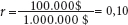
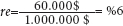
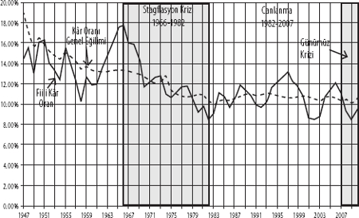
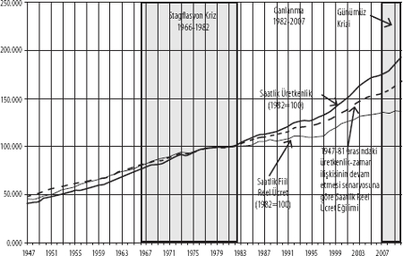
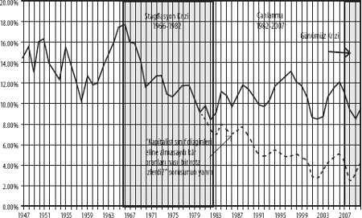
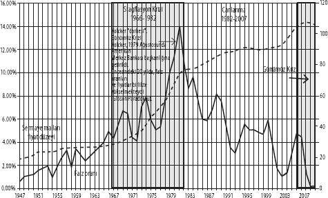
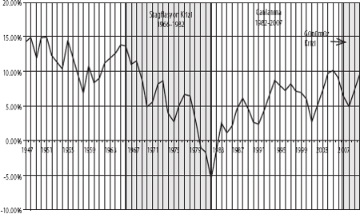
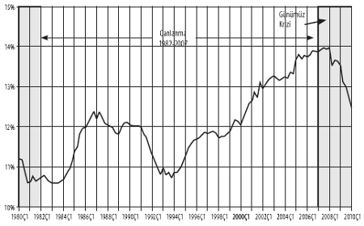
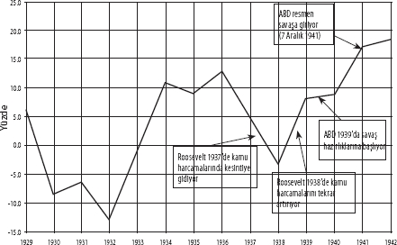
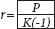

Anwar Shaikh
2008'de tüm dünyada dizginlerinden boşalan genel ekonomik krizi bir Büyük Buhran olarak tanımlamalıyız. ABD'deki finans krizi, buhranın tetikleyicisi olmak birlikte, nedeni değildi. Bu kriz, kapitalist birikimin bildik bileli süregiden, uzun süren canlanmaların gün gelip mutlaka uzun süreli gerilemelere dönüştüğü işleyişi içerisinde bütünüyle normal bir evredir. Canlılıktan gerilemeye doğru yaşanan bu dönüşüm gerçekleştiğinde, ekonominin sağlık durumu da iyiden kötüye gitmiş demektir. Gerileme evresinde krizin tetiklenmesi için bir sarsıntı yeterlidir; 1820'lerde, 1870'lerde, 1930'larda ve 1970'lerde genel krizlerin tetiğini çeken sarsıntılar gibi.[1] John Kenneth Galbraith, haklı bir ün kazanmış The Great Crash 1929 [Büyük Çöküntü 1929] kitabında, 1930'lardaki Büyük Buhran öncesinde azgın bir finansal spekülasyonun hüküm sürdüğüne, borsalardaki çöküşün bir ekonomik yıkımı tetiklemesine izin veren şeyin, ekonominin 1929'daki temelden çürük ve kırılgan yapısı olduğuna işaret ediyor.[2] O zamanki durum neyse, şimdi de aynısıyla karşı karşıyayız.[3] Bu gelişmelerin her birini, aslında apak olan yün yumağına tesadüfen düşmüş "kara kıl"lar gibi tekil olaylar şeklinde görmeyi yeğleyenler,[4] açıklamaya çalıştıkları tarihin kendi dinamiklerini unutmaktalar. Bunu yanında, işlerine geldiği gibi, bizi bu tarih tekerrürlerine mahkûm eden şeyin aslında kâr mantığı olduğunu görmezden gelmekteler.
Kapitalist birikim, çalkantılarla dolu, devingen bir süreçtir. Kendi yapısında zaten var olan güçlü ritimler, konjonktürel etmenler ve belli tarihsel gelişmelerin müdahaleleriyle değişikliğe uğrar. Dolayısıyla, birikimin somut tarihine dair bir çözümleme ortaya koyacaksak, içkin işleyişlerle, bunların şu ya da bu tarihsel ifade buluş biçimleri arasında ayrıma gitmek durumundayız. Konjonktür hareketleri, kapitalizm dinamiklerinin en gözle görünür unsurlarını oluşturuyor. Stoklar seviyesinde gerçekleşen, üç ila beş yıllık hızlı konjonktür döngüleri, toplam arz ve talepteki daimi dalgalanmalardan kaynaklanırken, toplam kapasite ve arzın daha yavaş işleyen dalgalanmaları da sabit sermaye üzerinde yedi ila on yıllık döngüler meydana getirir.[5] Ancak, bu dalgalanmaların altında, uzun sürelerle birbirinin yerini alan birikim hızlanma ve yavaşlamalarından oluşan, bunlardan çok daha ağır ilerleyen başka bir döngü mevcut. Çeşitli türden konjonktür dalgalanmaları, işte bu ana dalgalara eklemlenerek kendini gösteriyor.[6] Kapitalizmin tarihi, dekorun durmaksızın değiştiği bir sahnede yol almıştır.
1930'lardaki Büyük Buhran'ın ardından, 1970'lerin Büyük Stagflasyon'u geldi. Bu kez, altta yatan krizin su yüzündeki görünümü, alıp yürümüş bir enflasyon biçimine bürünmüştü. Ancak, enflasyon büyük istihdam kayıplarının ortaya çıkmasını, borsa indekslerinin reel değerlerinde büyük düşüşlerin gözlenmesini, yaygın şirket ve banka iflaslarının yaşanmasını engelleyemedi. Ekonomik ve finansal sistemin topyekûn çözülebileceği yönünde kayda değer bir kaygı hissedilmekteydi.[7] Bu yazımızın amaçlarını dikkate aldığımızda, ABD ve İngiltere gibi ülkelerde krizin yüksek işsizlik oranlarına, emekçilerle yoksullara yönelik kurumsal destekler ve sendikalar üzerinde yaygın saldırılara, gerek reel ücretleri, gerekse borsaların reel değerini hızla aşındıran bir enflasyona yol açtığını belirtmekte yarar var. Japonya gibi başka ülkeler, krizin süresini uzatacak, ancak ABD ve İngiltere'deki kadar derinlere ulaşmasını da engelleyecek önlemler alıp, düşük işsizlik oranlarında ve varlık fiyatlarında ağır ağır bir gerileme sağlamaya yöneldiler.
Ülkeler arasındaki bu farklılıklara karşın, 1980'lerde tüm kapitalist ülkelerde yeni bir canlanma dönemi baş gösterecekti. Canlanmayı teşvik eden şey ise, net sermaye getirisini büyük ölçüde yükseltecek şekilde faiz oranlarının sert biçimde düşmesi, yani kâr oranı ile faiz oranı arasındaki net farkın artması oldu. Düşen faiz oranları, aynı zamanda sermayenin yerküre boyunca yayılmasını da kolaylaştırarak, tüketici borçlarında muazzam bir artış getirecek, finans ve emlak alanlarında uluslararası balonların oluşumunu pompalayacaktı. Finans kuruluşları, finansal faaliyetler üzerindeki mevzuat dizginlerinin pek çok ülkede gevşetilmesini hararetle talep etmekteydiler ve Kanada gibi birkaç ülke dışında, bu yöndeki çabalar büyük ölçüde başarıya da ulaştı. Aynı zamanda, ABD ve İngiltere gibi ülkelerdeki emek sömürüsünde benzeri görülmemiş bir yoğunlaşma yaşanıyor, bu sömürü, reel ücretlerin üretkenlikteki artış karşısında durağan kalmasıyla kendini belli ediyordu. Ücretlerdeki düşüşün normalde reel tüketici harcamalarında durgunluğa yol açması beklenebilecekken, faiz oranlarının düşmesi ve kredi temin etmenin hiç olmadığı kadar kolaylaşmasıyla, tüketici harcamaları ve diğer harcamalardaki artış sürüp gitti. Tüm sınırlar kalkmış, tüm hareket yasaları işlevini yitirmiş gibiydi. Derken, çöküş geldi çattı. ABD'deki ipotek krizi sadece tetikleyici unsurdu. Altta yatan sorun, faiz oranlarındaki düşüşte ve borçlanmadaki artışta, yani canlanmayı pompalayan iki eğilimde artık sınırlara ulaşılmış olmasıydı.
Kriz, yayılmasını halen durdurmuş değil. Belli başlı tüm gelişmiş ülkelerde muazzam miktarda para yaratılıp ticaret dünyasına akıtıldıysa da, bu paralara akıtıldıkları yerlerde büyük ölçüde el koyuldu. Bankalar, paralarını yeterli oranda kâr ile birlikte geri alacaklarının kesin olmadığı riskli ortamda borç verme faaliyetlerini hızlandırma isteği göstermiyor. Otomotiv gibi sektörlerdeki şirketler ise, büyük stok dağlarının altında ezildikleri için benzer bir sorun yaşamaktalar ve bu stokları eritmeden genişlemeyi akıllarına dahi getiremezler. Dolayısıyla, halkın çoğunluğu, ortalığa saçılan paradan hiçbir dolaysız fayda sağlamış değil ve işsizlik oranlarında yüksek seyir devam ediyor. Bu çerçeveden bakıldığında, 1930'larda Roosevelt iktidarı tarafından yapılanın aksine, devletin yaratacağı istihdam yoluyla işsizliğin doğrudan azaltılması dönük pek az adımın atılmış olması son derece çarpıcı.
Bu nokta bizi temel soruya götürüyor: Kendi evrim süreci içerisinde kurumları, yasal düzenlemeleri ve siyasi yapılanmaları bu denli büyük bir değişim sergilemiş kapitalist sistem, nasıl oluyor da aynı ekonomik rotaları sürgit tekrarlayabiliyor? Yanıt, bu rotaların, kapitalizmin tarihi boyunca ticari davranışların merkezî düzenleyicisi konumunda kalmış kâr güdüsü tarafından belirleniyor olduğu gerçeğinde. Kapitalizmin kabuğu durmaksızın mutasyona uğruyor, ancak bunu yaparken, aslında çekirdeğin değişmeden kalabilmesini amaçlıyor. Kuramsal dinamiklerin bütünüyle açıklanması yazımızın kapsamını aşmakta olsa da, birikim ile kârlılık arasındaki ilişkiyi irdeleyerek bu değişimin mantığını önemli derecede kavrayabiliriz. İlerleyen sayfalarda, gelişmiş kapitalist dünyanın merkezini oluşturduğu ve ayrıca krizin patlak verdiği yer olduğu için, Birleşik Devletler üzerinde yoğunlaşacağız. Ancak, gerçek faturanın tüm dünyaya kesildiğini, büyük ölçüde de dünyanın acılı kadınlarının, çocuklarının ve işsizlerinin payına düştüğünü söylemeden geçemeyiz.
BİRİKİM VE KÂRLILIK
"Ticari İşletmenin itici gücü ... Kârdır."[8] (J. M. Keynes)
"Kâr yoksa satış anlamsızdır."[9] (Business Week)
Varlık nedeninin kâr elde etmek olduğunu her ticari işletme bilir. Klasik iktisatçılar, birikimin kalbini kâr oranı (r) ile faiz oranı (i) arasındaki farkın oluşturduğunu savunmaktaydılar. Zira kâr aktif yatırımın, faiz ise pasif yatırımın getirisidir. Belli miktarda sermaye, emtiaların üretimi veya satışında da, başkalarına borç vermekte de, etkin spekülasyonda da kullanılabilir. Her bir durumda elde edilen kâr oranı, yatırılmış sermayenin getirisi olacak, girişimlerin tabi olduğu tüm riskler, belirsizlikler ve hataları da bağrında taşıyacaktır. Ticaret erbabının kavramış olduğu üzere, "Bilinen belirlilikler ve ... bilinen belirsizlikler olduğu gibi ... bir de bilinmeyen belirsizlikler vardır."[10] Diğer taraftan, aynı miktarda sermayeyi tasarruf hesabına ya da güvenli tahvile yatıran bir kişi, arkasına yaslanarak da görece garantili bir şekilde faiz geliri elde edebilir. Bu tercihte kıstas noktasını teşkil eden faiz oranı, aktif yatırım sağladığı getiri oranı karşısındaki güvenli seçenektir. Marx, girişim kârı oranı [enterprise profit rate] şeklinde tanımladığı, aktif yatırımın itici gücünü oluşturan şeyin bu iki oran arasındaki fark (r – i) olduğunu belirtiyor. Keynes de hemen hemen aynı şeyi söylemekte: Kâr oranını, sermayenin marjinal verimi (SMV) şeklinde tanımlıyor ve bununla faiz oranı arasındaki farkı, yatırımın yaşabilirliğinin temeli sayıyor. Neoklasik ve post-Keynesçi iktisat da yine bu farka odaklanmakla birlikte, meseleyi dolambaçlı bir yoldan ele alıyor: Üretim maliyetleri, sermaye stokunun faiz karşılığını gösteren "fırsat maliyetini" de kapsayacak şekilde tanımlandıktan sonra, girişim kârı "ekonomik kâr" terimiyle ifade edilmekte, buna karşılık düşen kâr oranı da düpedüz girişim kârı oranı (r – i) olmaktadır.[11]
Şu örneği ele alalım: Bir firmanın yıllık kârının 100.000 $, cari faiz oranının yüzde 4, yılın başındaki sermaye stokunun da 1.000.000 $ olduğunu varsayalım. Firmanın sermayesi, güvenli bir tahvile yatırılsaydı 40.000 $ kazanç getirecekti. Klasik bakış açısıyla, firmanın toplam kârını, sermayenin 40.000 $'lık faiz karşılığı ve 60.000 $'lık girişim kârı şeklinde iki bileşene ayırabiliriz. Neoklasik iktisat, faiz karşılığını da tıpkı ücretler, malzeme ve aşınma gibi bir "maliyet" kalemi farz ederek, tüm bunları farklı bir kılığa sokuyor. Sonuçta, getirdiği ekonomik kâr tanımı da aslında örneğimizdeki 60.000 $'lık girişim kârından başkası değildir. Post-Keynesçi iktisat, bunun da aralarında bulunduğu pek çok konuda neoklasik yaklaşımları benimsemekte.
Kâr oranı, yıllık kâr miktarının yılbaşındaki sermaye stokuna oranı olup, burada  denklemiyle ifade edilir. Karşılık gelen girişim kârı oranı (re), girişim kârının sermaye stokuna bölümü şeklinde hesaplanmakta ve böylece  oranı elde edilmektedir. Bu durumda, girişim kârı oranının, kâr oranı ile faiz oranı arasındaki farka eşit olduğunu görmek hiç zor değil: re = r – i = %10 – %4 = %6.
Pratik düzlemde iki başka durum daha önem kazanıyor. Birinci olarak, ulusal hesaplarda gösterilen kâr ne toplam kâr miktarını (P) ne de girişim karı miktarını (PE) ifade etmekte, bu ikisi arasında bir yerde durmaktadır. Ulusal hesaplardaki ekonomik kâr terimi, ödenmiş fiili faiz miktarı fiili kârdan düşüldükten sonra kalan tutarı tanımlar. Örneğimizdeki firma toplam sermayesinin yarısını (500.000 $) borç almışsa, yüzde 4 faiz oranı üzerinden 20.000 $ fiili faiz ödemesi yapacaktır. Ulusal hesaplarda, işte bu fiili faiz ödemesinin (20.000 $) fiili kârdan (P = 100.000 $) düşülmesiyle hesaplanan kâr tutarı (P' =80.000 $) dikkate alınmaktadır. Dolayısıyla, fiili kâr tutarını bulmak için, ödenen parasal fiili faiz miktarını da ulusal hesaplardaki kâr rakamına eklemek durumundayız. Sonrasında, girişim kârı miktarını ve oranını daha önce açıkladığımız gibi hesaplayabiliriz.[12]
İkincisi, pay kısmına cari dolar değeri üzerinden kâr tutarlarını ve paydaya da cari fiyatlara karşılık düşen sermaye stokunu koyuyorsak, tüm kâr oranlarının enflasyona göre düzeltilmiş reel oranlar olması gerektiği unutulmamalı. Böylece, gerçek bir değerlendirmenin gereği olarak, pay ve payda aynı fiyat türlerinden oluşacaktır.[13] Hem P hem de K cari fiyatları yansıttığında yapılan kâr oranı (r) hesaplamasında bu durum zaten açıkça ortadadır. Ancak, girişim kârı oranı (re) hesaplamasında da aynı şey geçerli. Pay kısmında, cari kâr ile yılbaşındaki sermaye stoku üzerindeki cari faiz karşılığı arasındaki fark yer alıyor (P – iK). Böyle ölçüldüğünde, re = r – i şeklinde hesaplanan girişim kârı oranı da reel bir oran olacaktır.[14] Ulusal hesaplardaki kâr ve sermaye ölçümlerine dair daha ayrıntılı bilgi, formül ve değerlendirmeleri Ek: Veri Kaynakları ve Yöntemleri bölümünde bulabilirsiniz.
Şimdi, günümüz krizinin yolunu açan olayların çözümlemesine, bu tespitleri de cebimize koyarak devam edebiliriz. Kâr oranında meydana gelen hareketleri ilk ve en önemli sıraya oturtuyoruz.
ABD'DE SAVAŞ SONRASI BİRİKİM YAPISI
Genel kâr oranı
Şekil 1, faiz ve vergi öncesi kârın, yılbaşındaki tesis ve makine cari maliyetine oranı cinsinden, finans dışı Amerikan şirketlerinin kâr oranını gösteriyor. Aynı zamanda, kâr oranının sergilediği genel eğilimi de noktalı çizgi şeklinde görüyoruz (ayrıntılar için bkz. Ek). Daha önce açıkladığımız gibi, faiz ödemeleri öncesindeki kâra dair bir ölçüte ihtiyacımız var, çünkü sonunda bu ölçütü aynı sermaye stokunun faiz karşılığı ile kıyaslayarak girişim kârına ulaşmayı hedefliyoruz. Finans dışı şirketler, kâr rakamlarını fiili faiz ödemeleri düşülmüş halde yayınladığından, bu ödemeleri yayınlanan kâr rakamlarına tekrardan eklemek bize kalıyor. Gelirlerinin bir kısmını faiz ödemelerinden elde eden finans şirketlerine ait kârın bir bölümü de, doğal olarak, finans dışı şirketler için bu şekilde hesaplanan kâr tutarının içinde bulunuyor.
Şekil 1: Finans Dışı Amerikan Şirketleri İçin Fiili Kâr Oranları ve Kâr Oranı Genel Eğilimi, 1947-2010 (Kâr = Faiz ve Vergi Öncesi Kâr)

Fiili kâr oranının pek çok dalgalanmaya maruz kaldığı ve kısa vadede belli tarihsel olaylardan büyük ölçüde etkilenebildiği anlaşılıyor. Örneğin, kâr oranının 1960'larda sergilediği müthiş yükseliş, Vietnam Savaşı'nın aynı döneme denk düşen tırmanışını yansıtmakta. Savaşlar, en azından erken evrelerinde, kârlılık açısından olumlu bir ortam yaratır. Yine Şekil 1'de görülen kâr oranı genel eğilimi ise, yapısal etmenlerin kâr oranı üzerindeki etkileri ile Vietnam Savaşı gibi konjonktürel olayların yol açtığı kısa vadeli dalgalanmalar arasında ayrım yapabilmek üzere eklendi. Kâr oranı eğiliminin otuz beş yıl boyunca aşağı yönlü seyrettikten sonra istikrar kazandığını görüyoruz. Peki, ne oldu da otuz beş yıllık eğilim değişti?
Üretkenlik ve reel ücretler
Şekil 2, bize en önemli ipucunu sunuyor. Amerikan şirketler kesiminde[15] 1947-2008 dönemi için saatlik üretkenlik ile emeğin saatlik reel gelirleri (reel ücretler) arasındaki ilişkiyi incelediğimizde, reel ücretlerin üretkenliğe göre daha yavaş yükselme eğilimi sergilediğini, dolayısıyla sömürü oranının artması yönünde bir gidişatın varlığını fark ediyoruz. Ancak, 1980'lerde Reagan ile başlayarak, reel ücret artış hızında daha da dikkat çekici bir gerileme kendini gösteriyor. "Reel ücretler ile üretkenlik arasında savaş sonrasında gözlenen ilişki 1980'den sonra da devam etseydi nasıl bir eğriyle karşılaşırdık?" sorusunun yanıtını tespit ettiğimizde ve bu senaryoyu fiili durumla karşılaştırdığımızda, söz konusu değişimi açıkça ayırt edebiliyoruz. Eğilimde ortaya çıkan bu sapma, bahsettiğimiz dönemde emeğin dört koldan planlı bir saldırıya maruz bırakılması yoluyla elde edilmiştir. Söz konusu saldırıların kâr oranı üzerinde büyük etki yarattığını, çünkü emeğin gelirleri ile kâr arasında büyük bir ilişkinin mevcut olduğunu ilerleyen satırlarda göreceğiz.
Şekil 2: Saatlik Reel Ücretler ve Üretkenlik, Amerikan Şirketler Kesimi, 1947-2010 (1992 = 100)

Reel ücret artışının bastırılması ile kârlılık arasındaki ilişki
Şekil 3, reel ücret artışının bastırılması sonucunda kârlar üzerinde ne kadar büyük bir etkinin ortaya çıktığını gösteriyor. Grafikte hem kâr oranlarının ortaya koyduğu fiili eğriyi, hem de "Finans dışı reel ücretler ile finans dışı üretkenlik arasında savaş sonrası dönemde yaşanan ilişki daha ileriki yıllarda da korunsaydı nasıl bir rota oluşurdu?" sorusuna yanıt veren eğriyi görüyoruz. Reagan dönemi ile başlayarak emeğe yöneltilen baskının açık bir amacı vardı: Yirminci yüzyılın geri kalan bölümünde ekonomik canlanmayı pompalamak.
Şekil 3: Finans Dışı Amerikan Şirketlerinin Fiili ve Varsayımsal Kâr Eğrileri, 1947-2009 (Varsayımsal eğri, reel ücretlerde savaş sonrasındaki eğilimin devam etmesi senaryosuna dayalıdır)

Faiz oranlarındaki olağandışı düşüş
Kâr oranındaki düşüşün, reel ücret artışlarındaki çok daha derin bir yavaşlama ile durdurulduğunu az önce gördük. Ancak bu durum, 1980'lerde başlayan büyük canlanmaya dair açıklamamızda meselenin sadece bir bölümünü aydınlatıyor. Yazımızın başında vurguladığımız gibi, kapitalist birikimin itici gücü, kâr oranı ile faiz oranı arasındaki fark, yani girişim kârının oranıdır. Büyük canlanmanın kapısını açan diğer kilide de işte burada rastlıyoruz: Faiz oranlarında, aşağı yukarı aynı dönemde başlayan ve olağanüstü uzun bir zamana yayılan düşüş. Şekil 4, üç aylık Amerikan hazine tahvilleri faiz oranının sergilediği gidişatı ve noktalı çizgiyle de sermaye malları fiyat indeksini (pk) gösteriyor. 1947 ile 1981 arasındaki ilk evrede faiz oranının yirmi dört kat artarak yüzde 0,59'dan yüzde 14,03'e ulaştığını görüyoruz. 1981'den itibaren gelişen ikinci evrede ise faiz oranı sert bir biçimde çakılıyor ve yüzde 14,03 ile başladığı yolculukta, 2009'da yüzde 0,16'ya iniyor. Piyasa etkilerini politika müdahalelerinden ayırabilmek için, rekabete dayalı olarak belirlenen faiz oranları kuramını irdelemek gerekir ki, çalışmamızın kapsamı dışına çıkmadan bunu yapmamız mümkün değil.[16] Ancak, piyasa etmenleri ve politika kararlarının birbiri karşısındaki ağırlığı ne olursa olsun, faiz oranındaki uzun yükseliş dönemi ve onu izleyen uzun süreli düşüş, belli başlı kapitalist ülkelerin çok büyük kısmında gözlemlendi. Şekil 5, ABD'deki faiz oranı ile ABD'nin ticaret ortaklarındaki faiz oranlarının ortalamasını karşılaştırarak bu gerçeği gözler önüne seriyor. Pek çok başka şeyin yanında, ABD'de gözlenen dinamiklerin aslında bir bütün olarak kapitalist merkezin karakterini yansıttığını da bu grafikte görüyoruz.
Şekil 4: ABD'de Faiz Oranı (3 aylık hazine tahvili), 1947-2008

Şekil 5: ABD'de ve Dünyada (ABD'nin Ticaret Ortakları) Nominal Faiz Oranları
Girişim kârı oranı ve 1980'ler sonrası büyük canlanma
Şimdi tüm bu öğeleri toparlayabiliriz. Genel kâr oranı ile faiz oranı arasındaki farkın girişim kârı olduğunu görmüştük. Birikimin temel itici gücü, sanayi kapitalizminin "vahşi güdüler"inin somut temeli de budur. Şekil 3, genel kâr oranındaki uzun süreli düşüşün, emek üzerine yöneltilen, 1982 sonrasında reel ücret artış hızının önceki dönemden çok daha düşük seviyelere inmesine yol açan toplu bir saldırıyla tersine çevrildiğini ortaya koyuyor. Şekil 4 ve 5, 1982 sonrasında faiz oranlarının ne denli hızlı bir gerileme sürecine girdiğini gözler önüne seriyor. Şekil 6 ise, tarihte eşi benzeri bulunmayan bu iki hareketin, girişim kârına büyük katkıda bulunduğunu söylüyor. 1980'lerde başlayan büyük canlanmanın sırrı işte budur.
Büyük canlanma, kendi içinde çelişkilerle doluydu. Faiz oranlarındaki müthiş düşüş bir borçlanma çılgınlığının fitilini ateşleyecek ve tüm ekonomik kesimlerin borç yükü muazzam ölçekte artacaktı. Tüketici harcamalarındaki büyümeyi sürdürmek üzere, reel ücret artışındaki yavaşlama sonucunda gelirleri daralan hane halkına, görülmedik ölçüde düşük maliyetlerle borçlanma olanağı sunulmaktaydı. Nihayetinde, Şekil 7'de görebileceğimiz gibi, hane halkı borcu ile gelir arasındaki oran 1980'lerde sert bir yükseliş içinde girdi. İkinci olarak, faiz oranı sıfır noktasına kadar düştüğünden (örneğin bugünlerde 0,0017, yani %0,17), bu bakımdan gidilebilecek yol kalmadı. Bu taban faiz oranı ile ticari işletmeler ve tüketicilerin borçlanma faiz oranları (temel faiz, ipotek faizi) arasındaki farkın devlet tarafından hâlâ daraltılabileceği doğrudur. Ancak, belli bir faiz oranıyla para bulup, başka bir oranla aynı parayı borç veren finans sektörünün kârına kaynaklık eden şey de bu fark olduğundan, sözünü ettiğimiz daralmaya dair olanaklar sınırlıdır.
Şekil 6: Finans Dışı Amerika Şirketlerinin Girişim Kârı Oranı, 1974-2008

Şekil 7: Hane halkı İçin Borç-Gelir Oranı

Şekil 8: Hane halkı Borç Servisi Oranı

Peki, borç-gelir oranı büyürse ne olur? Sonuçta, borçlanmak ucuzladığına göre, daha büyük bir borç-servisine (aşınmalar ve faiz ödemelerinin gelire oranı) girilmeden daha fazla kredi temin edilebilir. Gerçekten de, Şekil 8'de görüldüğü üzere, 1980'lerde borç-gelir oranı sürekli büyüdüğü halde, borç-servis oranı dar bir aralıkta kalmayı sürdürdü: Hane halkı daha fazla borçlanıyor, ancak aylık geri ödemeleri pek fazla yükselmiyordu. Ne var ki, borçların artmaya devam ettiği 1990'larda borç-servis oranı da yükselmeye başlayacaktı. 2007'ye gelindiğinde borç dalgası tarihsel bir zirve yaptı ve yayılan krizin sancıları arasında, borçlanmadaki düşüşün gelirlerdeki azalmayı da geride bırakmasıyla, 2008'de dibe çakıldı.
Burada önemli bir nokta çıkıyor karşımıza. İşçilerin bulunduğu taraftan bakılınca, faiz oranlarındaki düşüş, reel ücret artışındaki yavaşlamaya karşın bir süre daha yaşam standartlarını sürdürebilmelerine olanak tanıyan hane halkı borçlanmasını kışkırttı. Makroekonomik pencereden bakıldığında ise, sonuçta hane halkı harcamalarında ortaya çıkan kabarma, canlanmaya yakıt pompaladı. Canlanmanın başlıca itici gücünü, faiz oranlarındaki sert düşüş ve reel ücretlerin üretkenlik karşısındaki bir o kadar sert gerileyişi (yani sömürü oranının yükselişi) teşkil etmiş, bu iki etmenin bir araya gelmesiyle girişim kârı büyük ölçüde yukarı çekilmiştir. Meselenin iki tarafı da (sermaye ve emek) aynı iki etmenle kaşı karşıya geldi; ama zarlar hileliydi.
1930'LAR BÜYÜK BUHRAN'INDAN ALINAN DERSLER
Günümüz krizi derinleşirken, dünyanın dört bir yanında hükümetler çukura düşen banka ve şirketleri kurtarmaya koşuştular. Bu süreçte çoğu kez, dudak uçuklatacak kadar büyük miktarlarda yeni para yarattılar. Etkisini gerileme dönemlerinde gösteren işsizlik ödeneği ve refah harcamaları gibi "otomatik dengeleyiciler", tüm gelişmiş ülkelerde mevcut. Ancak, bu dengeleme etkisi resesyonlar için gerçek olsa da, buhranlar için değil. Hükümetler, işçilere doğrudan destek olacak yeni harcama biçimleri oluşturma konusunda, bankalar ve şirketleri kurtarmakta olduğu kadar hevesli değil. Hatta bütçe açığı yaratan harcamalar konusunda, birbirinden derin bir uçurumla ayrılan iki farklı siyasi kamptan söz edebiliriz.
2010 Haziran'ında Toronto'da düzenlenen G-20 toplantılarında bu uçurumlar açıkça gün yüzüne çıktı. Taraflardan biri konumundaki Ortodoks iktisadın talep ettiği "kemer sıkma" politikaları, sağlık, eğitim ve refah harcamaları ile emekçilere destek olan diğer harcamalarda yapılacak kesintiler olarak düşünülmeli. Avrupa Merkez Bankası başkanı Jean-Claude Trichet, bu toplantılar sırasında, "Kemer sıkma uygulamalarının stagnasyonu tetikleyebileceği fikri yanlıştır," cümlesini kurdu. Almanya Maliye Bakanı Wolfgang Schauble ekledi: "Hükümetler, talebi canlandırma doğrultusunda bir kestirme yol olarak borç verme konusunda fazla meraklı davranmamalılar.... Bütçe açığına dayalı harcamalar, sürekli bir durum haline getirilemez." Ortodoks ekonomi anlayışında piyasanın kendi içinde hemen hemen mükemmel bir yapı olduğu ve hızla toparlanacağı yönünde bir inanışın bulunması, bu duruşun nedenlerinden biri. Zaten finans dışı şirketlerin girişim kârı oranları, Şekil 6'da görüldüğü gibi, 2010'da belirgin bir biçimde tekrar yükselişe geçmişti. Ayrıca, bazı yatırım bankaları için, para Meksika Körfezi'ne saçılmış petrolden farksız: Tek yapmaları gereken, yüzeydeki kaymağı sıyırıp almak. 2010 ilk çeyreği Goldman Sachs'a 3,3 milyar $ kazanç getirerek önceki yılı ikiye katladı ve şirket için 1999'da halka açıldığı günden beri en kârlı ikinci çeyrek oldu. Ortodoks kuramın iyimser bakışıyla, mutlu günlerin neredeyse geri döndüğünün işaretiydi bu. Bunun yanında, Avrupa merkez bankaları da 1920'ler Almanya'sında bütçe açığıyla finanse edilen hiper-enflasyona ve bunun yıkıcı toplumsal, siyasi sonuçlarına dair acı hatıraları unutmuş değil. Son olarak, Avrupa sermayesinin kemer sıkma programlarından elde edeceği olası fayda da pratik bir mesele olarak orta yerde duruyor. Avrupa emekçileri, neoliberal çağı Amerikalı ve İngiliz emekçilerine kıyasla daha hasarsız atlattılar. Reagan ve Thatcher tarafından açıkça gösterildiği üzere, krizler emeğe yöneltilecek saldırılar için mükemmel bir kılıf sunar. Bu bakış açısıyla, kemer sıkma uygulamalarının tüm halk için işleri daha da kötüye götürmesi olasılığı, şayet bugüne dek direnmiş emeğin zayıflatılmasına yarayacaksa, kabullenilebilecek bir risktir.
G-20 toplantılarında Amerikan tarafı farklı kaygılar dile getirdi. Sadece ABD'de hane halkı refahı daha şimdiden trilyonlarca dolar düşmüştü ve yeni konut satışları şimdi 1981 düzeyinin bile altındaydı. Üstelik Uluslararası Çalışma Örgütü, "uzun ve ciddi" bir küresel istihdam krizinin kapıya dayandığı uyarısını daha o günlerde yapıyordu. Çeşitli savaşlara bulaşmış ve küresel jandarmalığa soyunmuş bir emperyal güç için, büyük ciddiyetle ele alınması gereken bir uyarıydı bu. Son olarak, yine burada da kritik bir tarihsel ders söz konusu. Başkan Barack Obama, AB liderlerine duruşlarını gözden geçirme çağrısı yaparken, "Geçmişte teşviklerin çok erken geri çekilmesiyle ekonomik güçlüklerin ve resesyonun tekrar baş göstermesine yol açan dolaylı hatalardan ders almaları" gerektiğini söyleyecekti.[17] Sözünü ettiği "dolaylı hatalar" 1930'larda yaşananlarla ilgiliydi. 1929'da borsalarda meydana gelen çöküş, 1929-32 döneminde üretimde sert bir düşüşe ve işsizlikte de aynı ölçüde keskin bir tırmanışa neden oldu. Ancak, takip eden dört yılda üretim neredeyse yüzde 50 artmış, işsizlik üçte bir oranında gerilemiş ve kamu harcamaları yaklaşık yüzde 40 yükselmişti. 1936'da üretimin büyüme hızı yüzde 13 gibi müthiş bir orana erişmiş durumdaydı. Sorun şuydu ki, federal bütçe bu dört yılda neredeyse yüzde 5 açık verilerek uygulandı. Nihayet 1937'de Roosevelt yönetimi vergileri yükseltme ve kamu harcamalarını ciddi ölçüde kesme kararını aldığında,[18] reel GSYH derhal düşecek ve işsizlik bir kez daha yükselecekti. Hatasını fark eden hükümetse hızla geri döndü ve kamu harcamaları ile kamu açıklarını 1938'de önemli miktarda artırdı. 1939'da üretimin büyüme hızı tekrar yüzde 8'i bulmuştu. Amerika ancak o andan sonra olası bir savaşın hazırlıklarına girişebildi ve nihayet 1942'de savaşa bütünüyle girebildi. Şekil 9, bu kritik dönemde gözlenen GSYH büyüme oranlarını gösteriyor.
Bu yaşananlardan çıkartılabilecek pek çok ders var. Birincisi, kriz döneminde kamu harcamalarında kesintiye gidilmesi "dolaylı bir hata" olacaktır. Obama'nın bakış açısı bu yönde. İkincisi, ekonominin 1933'te toparlanmaya başladığı, hükümetin 1938'de harcamaları keserek attığı yanlış adım haricinde, 1939'da savaş harcamalarına başlanmasına, sonrasında 1942'de tamamen savaşa girilmesine dek (Pearl Harbor baskını 7 Aralık 1941'de gerçekleşti) bu toparlanma eğilimini devam ettirdiği son derece açıktır. Dolayısıyla, savaşın kendisi de üretimi ve istihdamı teşvik etmiş olmakla birlikte, gerçekte dokuz yıl önce başlamış olan toparlanmayı savaşa bağlamak yanlış olacaktır. Üçüncüsü, barış döneminde kamu harcamalarının toparlanmada kritik rol oynadığını söylemek gerekir. Dördüncü olarak, kamu harcamaları sadece mal ve hizmet alımıyla sınırlı kalmamış, aynı zamanda kamu hizmetleri yoluyla doğrudan istihdama da yönelmiştir. İş Projeleri İdaresinin (WPA) bile kamu inşaatlarında, sanat alanında, eğitimde ve yoksulların desteklenmesinde tek başına milyonlarca kişiyi istihdam ettiğini belirterek örnek verebiliriz.
Şekil 9: Büyük Buhran Sırasında Reel GSYH Artışı, 1929-1942

GÜNÜMÜZE DAİR SİYASİ ÇIKARIMLAR
Kamu harcamaları, bir ekonomiyi fazlasıyla canlandırabilir. Bütçe açığıyla finanse edilen, muazzam ölçülerdeki kamu harcamalarının hemen her zaman eşlik ettiği savaş zamanları da bu gerçeği doğrular. Örnek gösterebileceğimiz İkinci Dünya Savaşı'nda, 1943-45 döneminde ABD'de bütçe açığı ortalaması yüzde 25 oldu. Oysa bugün, 2010'un ikinci çeyreğindeki açık yüzde 11'in altında. Her ne olursa olsun, savaşın, üretim ve istihdam artışına olanak tanıyan belli bir toplumsal seferberlik biçimi olduğunu belirtmemiz gerekiyor. Böylesi durumlarda sağlanan istihdamın bir kısmı, silahlara ve diğer yardımcı ürünler ile hizmetlere yönelik talepten, ayrıca bunların başka mallar için meydana getirdiği talepten kaynaklanır. Elbette, işin diğer kısmı da silahlı kuvvetler, devlet yönetimi, iç güvenlik, kamu ve özel tesislerin bakımı ve onarımı vb. çerçevesinde gerçekleşen doğrudan istihdamdır. Dolayısıyla, savaş dönemleri için bile iki farklı ekonomik canlanma arasında ayrıma gitmek durumundayız: Ticari işletmelerin parayı ellerinde tutmamaları veya borç ödemelerinde kullanmamaları kaydıyla, devletin doğrudan talebinden kaynaklanan istihdam teşviki ve istihdam edilen kişilerin gelirlerini tasarruf etmemesi veya borç ödemesinde kullanmaması kaydıyla, devletin doğrudan personel istihdamı.
Aynı iki teşvik biçimi, barış döneminde krizle başa çıkma amaçlı bir toplumsal seferberlik ile ilgili harcamalarda da geçerli olacaktır. Birinci teşvik biçiminde, kamu harcamaları ticari işletmelere ve bankalara yönlendirilir ve bundan faydalanan firmaların istihdamı artıracağı umulur. Geleneksel Keynesçi bakış tam olarak bunu söylüyor: Ticareti teşvik edin ve faydanın aşağı doğru süzüle süzüle inip istihdam yaratmasını bekleyin. İkinci teşvik biçiminde hükümet özel sektörde iş bulamayanlar için doğrudan istihdam yaratır. Yeni işe girmiş olan bu kişiler zaten kazandıklarını harcamak zorundadırlar ve bu kez fayda yukarı doğru çıkarak ticari işletmeler ve bankalara kadar ulaşır. Teşvik için kullanılan paranın harcanması hayati önem taşır. Son dönemde, dünyanın tüm büyük ülkelerinde bankalar ve finans dışı şirketlerin kurtarılmasına muazzam büyüklükte tutarlar yönlendirildi. Ancak, bu kaynakların yönlendirildiği yerde sık sıkı tutulduğunu görüyoruz: Bankalar bu parayı kullanarak sallantıdaki portföylerini payandalarken, işletmeler de borçlarını ödüyorlar. Şurası kesin ki, yeterli getiri sağlama umudunun hayli düşük olduğu ortamda ne bankalar ne de işletmeler bu parayı sokağa atmak isteyecektir. Sonuçta, devasa kurtarma fonlarının ancak pek küçük bir bölümü aşağı katlara süzülebiliyor. Oysa ikinci teşvik biçimi tercih edilseydi, muhtemelen işler büsbütün başka yönde gelişecekti. Yeni işe giren kişiler, hayatta kalabilmek için, aldıkları parayı harcamak zorundadır. Böylece iki önemli avantaj kendini gösterecekti: En fazla ihtiyaç duyanlar için doğrudan istihdam yaratılacak ve bu kişilere mal veya hizmet satan şirketler de yükselen gelirlerden faydalanacaktı.
Öyleyse, hükümeti doğrudan istihdama yönelik programlar oluşturmaktan alıkoyan nedir? Yanıt, sermaye cephesinin şirketlere yönelik teşvik tipini tercih ediyor olmasıdır. Doğrudan işgücü istihdamı, kâr güdüsünü toplumsal faydanın altına ittiğinden, kapitalist düzen açısından bir tehdit, bir "sosyalistlik" olarak görülmekte. Dahası, böyle bir hamle, hem yurtdışında düşük maliyetli üretim yapmak hem de yurtiçindeki reel ücret artışlarını kontrol altında tutmak amacıyla dünya genelinde ucuz işgücü kullanımını daha da ileri boyuta taşımak isteyen neoliberal planla çakışacaktı. Dolayısıyla, günümüzün sorusu, bir Büyük Buhran'ın getirdikleriyle mücadele yolunda ihtiyaç duyulan toplumsal seferberliği, savaş oyununa gelmeden sağlayıp sağlayamayacağımızdır. İşsizlik, yoksulluk ve çevresel yıkım bütünüyle küresel nitelikli olduğundan, sorumuz da dünyanın genelini ilgilendiriyor. Ancak, doğaları gereği, seferberlikler yereldir. Hedef, güçlü çıkarlar ve korkak devletler karşısında seferberliğin dünyaya yayılmasını sağlamak olmalıdır.
EK: VERİ KAYNAKLARI VE YÖNTEMLERİ
Bu ek bölümünde, Şekil 1-9'da yer alan değişkenleri elde etmekte kullanılmış kaynaklar ve yöntemlere dair ayrıntılar verilmektedir. Verilerin büyük bölümü, Amerikan Ekonomik Analiz Dairesinin
http://www.bls.gov
adresinde çevrimiçi görülebilen Ulusal Gelir ve Üretim Hesapları (National Income and Product Accounts – NIPA) ile Sabit Varlıklar (Fixed Assets – FA) tablolarından alınmıştır. Diğer kaynaklar aşağıda belirtilmektedir.
Şekil 1:  ve r'nin eğilim değeri (reğilim)
K, 2010'un ilk çeyreğine kadarki dönem için NIPA tablosu 1.14'ün 27'inci satırından alınmış finans dışı şirket kârları ile yıllık olarak 2008'e kadar mevcut olan ve her bir bileşenin eğilimleri doğrultusunda 2010'a kadar genişletilen Tablo 7.11'de 11'inci satırdan 17'inci satırın çıkartılmasıyla elde edilmiş finans dışı şirketler net parasal faiz ödemelerinin toplamıdır. NIPA'da belirtilen şirket kârları, fiili net parasal faiz ödemeleri düşülmüş kârlar olduğundan, faiz öncesi kâr rakamını bulmak için faiz ödemelerini tekrardan eklememiz gerekmiştir. Sonuçta, "Faiz ve Vergi Öncesi Kazanç" adıyla aşina olduğumuz muhasebe ölçütünün NIPA hesaplamalarındaki karşılığı elde edilmiştir. Bu adımı gerekli görmemizin nedeni, girişim kârı tutarını ve oranını bulabilmek amacıyla daha ileriki basamaklarda tüm sermaye için faiz karşılığını (sadece borç alınmış sermaye için ödenmiş fiili net faiz tutarını değil) düşecek olmamızdır (bkz. aşağıda Şekil 6 ile ilgili hesaplamalar).
Kâr oranının payda kısmında, ilgili yıl için yatırılmış sermaye miktarı yer alır. NIPA tablolarında yılın sonundaki sermaye stokuna yer verildiğinden, bir önceki yılın finans dışı şirketler için cari maliyet esaslı sermaye stokunu [K(-1)] kullanmamız gerekir. Yıl sonu sermaye stoku, Sabit Varlıklar (Fixed Assets – FA) Tablosu 6.1'de, 4'üncü satırda yer almaktadır. Sabit varlık verisi yıllık olarak 2008'e kadar bulunabildiğinden, geçmiş eğilimlerden yola çıkılarak 2009'a kadar genişletilmiştir.
reğilim değeri, Eviews 5 yazılımı içerisinde P ve K(-1) için 0,50 bant genişliği ile LOESS regresyonu (yerel regresyon düzleştirme tekniği) yürütülerek hesaplanmıştır. LOESS, derece 1 (doğrusal) çokterimliliğe ve yerel tricube ağırlıklandırma fonksiyonuna sahip, en yakın komşu değer türünde bir regresyondur. Verilerdeki kısa vadeli dalgalanmalara karşı hassasiyet sergilemeyen bu teknik, böylece eğilimlerin tahmin edilmesinde fayda sağlamaktadır. reğilim, P'nin eğilim değerinin K(-1)'e bölünmesi yoluyla elde edilmiştir.
Şekil 2: Şirketler kesiminde saatlik üretkenlik ve fiili/varsayımsal saatlik reel ücretler
Saatlik üretkenlik ve fiili reel ücret değerleri, Amerikan İşgücü İstatistikleri Dairesi (BLS)'nin
www.bls.org
adresinde mevcut "Önemli Sektörel Üretkenlik ve Maliyet İndeksleri" [Major Sector Productivity and Costs Indexes] başlığından alınmıştır. 2010 değerleri ilk çeyreğe aittir. Üretkenliğin (y) reel ücretlere (ec) oranında, savaş sonrasının "altın çağı" 1960-1981 döneminde gözlenen istikrarlı eğilim, ln(ec)'nin ln(y) üzerinde regresyonu ve bir zaman eğilimi ile elde edilmiştir. Daha sonra bu eğilim 1982-2009 dönemine uygulanarak, "Önceki eğilim devam etseydi ec nasıl bir rota izlerdi?" sorusunun yanıtı tahmin edilmeye çalışılmıştır. Oluşturulan senaryoda 1960-1981 dönemi yerine 1947-1981 dönemi eğilimi kullanıldığında, varsayımsal ücret eğrisi daha da yukarı çıkmaktadır. Reel ücretlerde Reagan-Thatcher döneminde başlayan yavaşlamanın kârlılık üzerindeki etkisini abartarak ifade etmiş olmamak adına, daha ılımlı olan eğilimin kullanılması tercih edilmiştir.
Şekil 3: Fiili kâr oranı (r) ile varsayımsal kâr oranı (rc) arasındaki karşılaştırma
Bu bölüme kadar hesaplanmış olan değişkenler kullanılarak, saatlik varsayımsal ücretlerin fiili saatlik ücretlere oranı elde edilmiştir (z - ecc /ec). 1982'den başlanarak, finans dışı şirketlerce ödenen toplam fiili ücretlerin (EC) z ile çarpılması yoluyla, 1982 öncesi eğilimleri devam etmesi varsayımında işçilerin alacağı ücretlerin toplamı (ECCc) tahmin edilmiştir. Aradaki fark (ECc — EC), reel ücret artışındaki gerileme sayesinde kazanılan kârı veriyor. Fiili kâr rakamına bunun da eklenmesiyle varsayımsal kâr miktarı bulunmakta, bu değerin sermaye stokuna K(-1) bölünmesiyle de varsayımsal kâr oranı tahminine ulaşılmaktadır.
Şekil 4: Faiz oranı ve fiyat düzeyi
Faiz oranı olarak, BEA tarafından
http://www.gpoaccess.gov/eop/tables10.html
adresinde yayınlanan Devlet Başkanlığı Ekonomik Raporu [The Economic Report of the President]'nda Tablo 73'ün ilk veri sütununda görülen 3 aylık hazine tahvili oranı esas alınmıştır. Fiyat düzeyi içinse, kârın satın alma gücünü gösteren değer olduğundan, yeni sermaye malları fiyatı kullanılmıştır. Bu değer de NIPA Tablo 1.1.9'un 7'inci satırında (sabit yatırım deflatörü) görülebilir.
Şekil 5: ABD'de ve ABD'nin ticaret ortaklarında faiz oranları
ABD faiz oranının nasıl belirlendiği yukarıda anlatıldı. ABD'nin ticaret ortakları içinse, Uluslararası Para Fonu (IMF)'nun Uluslararası Finans İstatistikleri'nden alınan faiz oranlarından yola çıkılarak bir ağırlıklı ortalama bulmak amacıyla, Amerikan Merkez Bankası Doların Döviz Değeri İndeksleri'nden
(http://www.federalreserve.gov/releases/h10/Weights)
alınan ticaret ortakları ağırlık değerleri kullanılmıştır. Bu hesaplamalar için Amr Ragab'a büyük teşekkür borçluyum.
Şekil 6: re = r – i için r ve i değerlerini önceki satırlarda açıkladık.
Şekil 7-8: Borcun gelire oranı ve borç servis oranı
Şekil 7, hane halkı borcunun bireysel kullanılabilir gelire oranıdır. Hane halkı borcu, Amerikan Merkez Bankası'nın D3 numaralı Fon Akışı tablosunda 2'nci satırdan, bireysel kullanılabilir gelir miktarı da NIPA Tablo 2.1'in 26'nci satırından alınmıştır.
Şekil 8, borç servisinin (ödenmemiş ipotek ve tüketici borçları üzerindeki aşınma ve faiz ödemeleri) bireysel kullanılabilir gelire oranı olup,
http://www.federalreserve.gov/releases/housedebt/default.htm
adresinde "Hane halkı Borç Servisi ve Mali Yükümlülük Oranları" başlığıyla yayınlanan Fon Akışı tablosunda değişken borç-servis oranı olarak belirtilmektedir.
Şekil 9: Büyük Buhran sırasında reel GSYH artışı, 1929-1942
1930'dan sonraki reel GSYH artışı değerleri NIPA Tablo 1.1.1, 1'inci satırda doğrudan görülebilmektedir. 1929 yılına ait artış oranı ise, The World Economy: Historical Statistics, OECD Kalkınma Merkezi, Paris yayınında mevcut 1928-1989 verileri (794.700, 843.334) kullanılarak hesaplanmıştır.